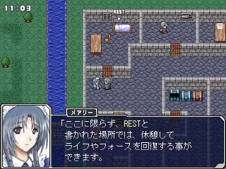
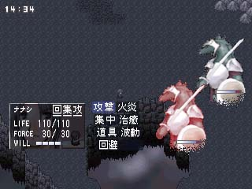

シルバーセカンド開発日誌
シル幻 5/5
■
2003-11-15 (土) 勇者RPG、グラフィック制作中▼
ボチボチと制作中しつつ、ついでに敵キャラのデザインなども
色々考えつつ頑張ってます！
どうせならシル見とかシル探（探求紀行）のネタとも
繋げようと思いつつシナリオ練る事にしました。もちろんそれぞれは
単体でも分かりやすく、面白く作るつもりです。
あと、キャラクターごとの個性を出せる部分・シーンを
いかにしてひねり出すかも考えてます。
RPGだと、キャラクターが話をする場面が意外と限られてくるので、
物事に対しての感想を述べたりする部分をどうやって増やすかが
意外と悩みの種。やっぱり色んな事に反応するキャラクターの方が
面白いモンですしね。
戦闘終了後に一言残そうかとか、何か装備させた時に
たまに喋らせたり（「剣は苦手なんだが…」等）しようかなあとか、
でもなるべくうざったくならないようにするには
どうすればいいかなあ、とか悩み所が多くて楽しいです。
悩むのは制作の醍醐味ですな！
↓今日の一枚
どっかで見たような人シリーズ→
でも女装じゃなくて女性です。
過去に魔王を倒した大賢者の
孫娘、というのが仮設定です。
ちなみに既婚者、子持ち。
仲間キャラの一人の予定です。 勇者RPG（仮）は、単純に王様に言われて魔王を倒しに行くという、
スタンダードすぎて涙が出そうなシナリオの予定なのですが、
それでも考える事がいっぱいです。
どんな物語か、どんな街があるのか、
その街はどんな特徴があるのか、どんな人々が住んでるのか、
何に悩んでるのか、その中に重要キャラクターがいるか、
いるならば主人公とどう絡んでくるか、ダンジョンはどうか、
敵にはどんな種類がいるのか、その種類である理由は何か、
ボス級の敵はどのような敵か、グラフィックはどんなのか等々……。
とりあえず舞台的には、
シルフェイド見聞録の時代から遙か古の世界、
ある浮遊島での物語となる予定で、それ以外はまだまだ
考え中であります！
で、一応、これからやるべき事のリストを。
・キャラクタードット絵の作成（いっぱい）
・モンスター絵の作成（いっぱい）
・マップチップの作成（素材探す？）
・シナリオ（物語やありとあらゆるセリフ）の作成（いっぱい）
・マップ（街・ダンジョン）の作成（いっぱい）
・顔グラフィックの作成（いっぱい？）
・音楽素材を探す（まあコレは最後でも）
・戦闘アニメーション絵の作成（いっぱい）
・端々のシステムの作成（そこそこ）
……並べてみると何も終わってない予感。
シル見は一発で最後まで終わらせられる気がしなかったから
連載型になったのか！？そんな気がする今日この頃！
でも今回作っておけば次回にも画像使い回せるだろうから頑張ろう。
で、今日の一枚↓
↑勇者RPG内のアルバート
シル見とは思いっきり時代が
違いますが、もし仲間に
なるのなら、フォース（魔法）の
使えない完全戦士系キャラに
なるでしょう。
■
2003-10-28 (火) 戦闘が動いて喜ぶ己の姿▼
現在、街やイベントの制作に取りかかっております。
シル見の戦闘では不遇だったアルバート辺りを
仲間にできるようにしようかなとか、色々考案中。
せっかくのRPGの機会なので、遊び放題やり放題で行きます。
敵に断末魔（「母ちゃん、今日は帰れそうにないよ……ゴフ」とか）を
喋らせたいなあとか、男主人公が全裸（葉っぱ付き）で
走り回って街の人達に罵声とか悲鳴を浴びせかけられたりできるとか
もう頭の中は夢いっぱいです！！まともな作品にならない予感MAX！
今日の一枚↓

画面は開発中の物です。■
2003-10-13 (月) 勇者RPG(仮)を作成中、ボチボチと▼

↑戦闘画面。ですが、まだコマンド選択して
敵を選ぶ部分までしか出来てません。
勇者RPGの戦闘システムでは、成長などによって
1ターンに複数回行動ができるようになります。
例えば、最初に防御してから攻撃攻撃、とか、
回復系のフォース（この世界で言う所の魔法）を使いつつ
攻撃するとかが可能になるワケです。
上のスクリーンショットでは最初に回避(回避率アップ)してから
集中（次の攻撃の威力を高めたりフォースの発動に必要）し、
最後に、攻撃、という順に選択しています。
それぞれ「回」「集」「攻」で表されています。
敵グラフィックはまだこれだけしか描いてませんが、
何かこの勢いだと敵まで全部自作してしまいそうです。
もうどうせならシル探とかのネタもこっちに使っちゃって全力で
作ってしまおうかどうか迷ってます。ネタを温存せずに
使いすぎると、次の作品（次の話）までの期間がまた
伸びてしまうのが難点です。でも思いついたネタを
全部使うと、それなりに面白さが上がるのもまた事実。まあ、
温存とか保守的な事考えずに、宵越しのネタは持たねぇ主義で
ガンガン攻めた方がCoooool！ですかな、やっぱり。
現状、気分が弱気なので、どうにも保守的な思考ばかり出ます。
勇者RPG(仮)については9/24以降の日記を参考に。
エシュターの妹、フィルが主人公のRPG、
「シルフェイド探求紀行」とは別の作品です。■
2003-10-04 (土) 暇を見つけてはちょくちょくと▼ ↓今日の一枚

↑量産型給仕。量産型兵士と同様、
お城にワラワラと生息しているキャラ。
キャラ絵やマップなどのドット絵などを
制作しつつシステム構築中です。
ようやく勇者RPGのコマンド周りが
完成。あとはバトルシステム。
……と、シナリオです。
一作ぐらいは真面目なRPGを
作りたいと思ってましたので
シナリオは真面目っぽくなりそうです。
もちろんお遊び要素はコソコソ
混ぜる予定。ただリアル事情が
忙しくなってきたので、果たして
どうなるやら……。 ■
2003-09-28 (日) 勇者RPG制作中▼ ↓今日の一枚

画面は開発中の物です。
勇者RPG、ウィンドウシステムと戦闘システムを組んだら
ストーリー制作開始予定です。現在、ウィンドウの
「アイテム」を作成途中です。使った時の処理とか
装備の処理とかアイテムのソート方法とか総重量計算とか
考える部分が一杯で割と苦労しましたが、
実際のアイテム使用時の内容を入れられる部分までは
何とか辿り着きました。薬草使った時にどういう処理するか、
とかの話ですね。
でもシル探で使いそうだった機能を全部こっちで
使ってしまいそうです……うーむ。 ■
2003-09-24 (水) シル探じゃない方のRPG制作中▼ ↓今日の二枚


現在割と短めの、習作っぽいRPGを制作中です。
余裕があれば本編と内容を絡めてもいいかもしれません。
↑のはキャラクター作成画面です。
っつーかまだここまでしか作ってません。
ドラクエ風に、主人公が何も言わないタイプのRPGですが
それだと一人旅の場合ツッコミ役が誰もいなくなるので、
トーテムという、いてもいなくても数に含まれないキャラで
カバーしようと思ったついでに、ステータスのタイプ分けも
できるなぁと思って、トーテム設定をそのまま採用。
選べるのは、獣、鳥、蛇の三種類です。
画面説明。分かりそうな部分はほっとくとして、
「移動能力」は地形無視の度合いや移動速度が速いか
どうか、「荷物」は所持重量の多さを示します。
が、この辺のシステムはまだ組んでませんので、
あくまで予定です。
ストーリーは、勇者である主人公が魔王を
倒しに行く話です。単純というか基本極まりない話ですが、
開き直った設定の方が自分らしい作品が作れそうだと
思ったので、もうこれで決定です。 ■
2003-09-19 (金) ドット絵が面白くなってきた！▼ ↓今日の一枚、RPG用ドット絵の一例


キャラクターのドット絵なのですが、
現在も描きやすいひな形を模索中。
サイズが小さい方がより早く作れる＆
ごまかしやすいので、ドット絵で
表情や動きを表現しないのなら、
こちらの方がラクそうだと思いました。
また、オール自作にするなら、
やはり「量産しやすさ」を一番に
考えた方が良さそうです。
あと、何年かぶりにフツーの
RPGらしきモノをツクールで
制作してみると、これまた
スゲェ面白いです。よく考えたら
RPGツクールでRPG作った事なんて
ほとんどなかった自分。腕試しに
ドラクエ1みたいなゲームでも
作ってみようかなあ……。 シル幻 5/5
Copyright © SmokingWOLF / Silver Second
 カテゴリ: シル幻
カテゴリ: シル幻 カテゴリ: シル幻
カテゴリ: シル幻